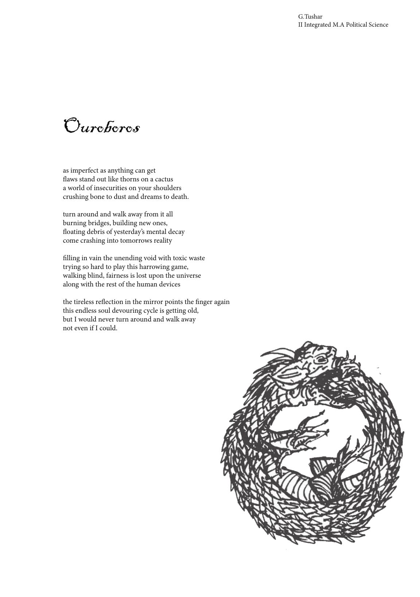

Ouroboros
G.Tushar
II Integrated M.A Political Science
as imperfect as anything can get
aws stand out like thorns on a cactus
a world of insecurities on your shoulders
crushing bone to dust and dreams to death.
turn around and walk away from it all
burning bridges, building new ones,
oating debris of yesterday’s mental decay
come crashing into tomorrows reality
lling in vain the unending void with toxic waste
trying so hard to play this harrowing game,
walking blind, fairness is lost upon the universe
along with the rest of the human devices
the tireless reection in the mirror points the nger again
this endless soul devouring cycle is getting old,
but I would never turn around and walk away
not even if I could.